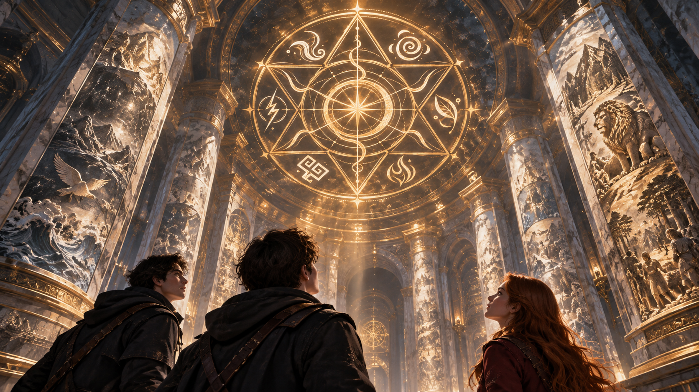
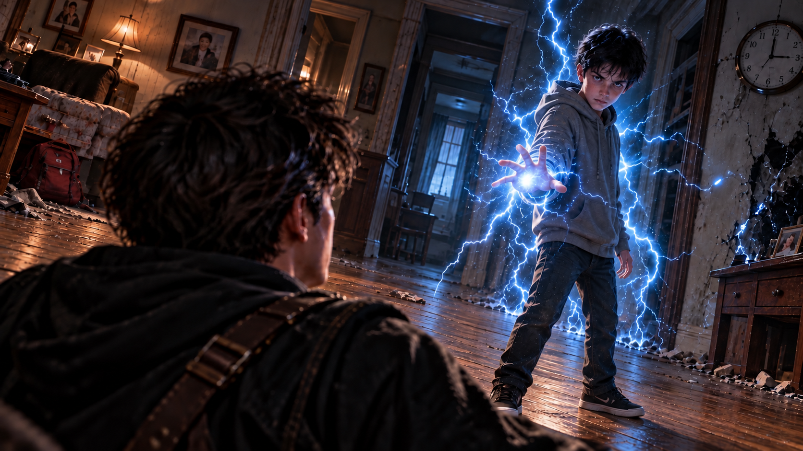

WHITE MAGIC ART STUDIO
第十六章
記憶迴廊
寇德薩拉．記憶迴廊
離開火炬之房後，安德烈家的三兄妹沿著古老通道繼續前進。
然而，才走出沒幾步，柴克便察覺到身上似乎有些不對勁。
「……等一下。」
他停下腳步，低頭摸了摸自己的外套。
乾的。
又伸手摸了摸頭髮。
也是乾的。
幾分鐘前，他們明明才全身濕透地從那間差點奪走三人性命的石室裡逃出來。可就在跨過石門之後，衣服紋理、鞋子、頭髮，甚至皮膚上殘留的水氣，竟然全都消失得乾乾淨淨。
就像剛才發生的一切，只是一場夢。
「你們也是？」
安娜聞言，低頭檢查自己的衣袖。
「真的耶……」
克里斯則伸出右手。
滋——
翡翠綠色的電流立刻在指間跳動，細小的光點隨著他的意念聚集，又迅速散去。
望著那道熟悉的雷光，克里斯總算鬆了一口氣。
「不只是衣服。」
他看向弟弟妹妹。
「聖術也恢復了。」
安娜立刻伸出右手。
「艾連。」
一道金光在掌中凝聚，黑金相間的雙頭細劍瞬間成形。
她握住劍柄，輕輕轉動手腕。
「看來只有火炬之房會封鎖聖術。」
柴克看看哥哥指間的綠雷，又看看安娜手中的艾連，最後低頭望向自己空空的雙手。
「真好。」
克里斯轉頭。
「什麼？」
「你們都有東西可以確認自己的能力回來了。」
柴克攤開雙手。
「我只能確認我的衣服乾了。」
安娜收回艾連，忍不住笑了。
「至少你不用穿著濕襪子闖第二關。」
柴克認真想了想。
「好吧，這確實值得感恩。」
克里斯已經重新取出傑西交給他的譯稿。
柴克看見那疊紙，忽然想起什麼。
「欸。」
「嗯？」
「那張紙剛剛不是也泡在水裡？」
三人同時看向手稿。
紙張完好無缺，連一點水漬都沒有，彷彿從未接觸過水。
安娜沉默了兩秒。
「……我決定不要再問這個地方是怎麼運作的了。」
「非常明智。」克里斯淡淡回答。
他翻開下一頁。
柴克好奇地靠了過去。
「下一關是什麼？」
克里斯的手指停在其中一行文字上。
「第二道試煉。」
他抬頭。
「記憶迴廊。」
柴克臉上的輕鬆頓時消失了一半。
「光聽名字就不太妙。」
「根據傑西的翻譯，進入其中的人，將會面對自己——或者彼此記憶中最深處的恐懼。」
柴克皺起眉頭。
「什麼叫『或者彼此』？」
「不知道。」
柴克忍不住笑了。
「你今天真的很常說這句。」
克里斯瞪了他一眼。
「你可以自己看。」
「我又看不懂。」
「那就閉嘴。」
「好兇。」
安娜從兩人中間走過，頭也不回地說：
「你們要不要邊走邊吵？」
三人於是沿著前方唯一的通道繼續前進。
與火炬之房外的石廊相比，這裡顯得更加寬敞。兩側高聳的白色石柱一路向前延伸，每根柱身上都雕刻著不同的古老圖像。
柴克原本只是隨意看了幾眼，走著走著，腳步卻逐漸慢了下來。
第一根石柱上，是一片混沌。
沒有天空，沒有土地，只有無數交錯的線條，彷彿一切尚未被賦予形體。
第二根石柱上，一道光芒自黑暗中央綻放。
第三根，海洋與陸地彼此分離。
再往前，樹木從地面生長，飛鳥展開翅膀，海中的生物游過浪潮，各種走獸奔跑於大地。
一幅接著一幅，彷彿有人將整個世界誕生的過程，完整地刻進了石頭裡。
柴克仰頭望去，忽然注意到，那些石柱上的雕刻似乎都指向穹頂中央的同一個符號。
那是一座由六個尖角構成的古老法陣。
而且，他並不是第一次看見。
「嘿，克里斯。」
「怎麼了？」
柴克指向頭頂。
「那個六芒星，我在我們家地下室，還有夢裡都看過好幾次，可是一直沒機會問你。」
他轉向哥哥。
「那個符號到底代表什麼？」
克里斯抬頭看了一眼。
「那是『聖術』的象徵符號。」
他走到柴克身旁，指向法陣的六個方位。
「我應該給你看過六元素各自代表的符文吧？」
柴克點點頭。
「有啊。」
「仔細看。雷、土、火、木、風、水，六個元素的符文，分別位於六芒星對應的位置。」
柴克順著哥哥所指的方向望去，果然看見那些熟悉的圖案。

「所以……」
「這裡的雕刻，應該是在描述拉比如何運用六元素創造世界。」
柴克再次環顧四周。
他望著那些古老的圖像，眼神逐漸變得不同。
「真的很壯觀……」
他輕聲說道。
「而且，我們家族竟然繼承了其中一份創世的力量。」
安娜聽見這句話，忍不住挑起眉毛。
「看來有人開始對自己的新身分感到驕傲囉。」
她故意拉長語氣。
「幾天前不是還對我們大呼小叫的嗎？」
柴克立刻轉頭。
「不是，那是正常反應好不好！」
他有些不好意思地抓了抓頭髮。
「況且……我又沒說過這些力量不好。」
克里斯看著弟弟，嘴角微微揚起。
「寇德薩拉裡留下的很多圖像，應該都比現在聖術師保存的文獻更加古老，也更接近當時真正發生的事。」
柴克點點頭，繼續沿著石柱前進。
然而，走到下一根柱子前，他忽然停住。
石柱中央，雕刻著一頭獅子。
牠站在高處，雄偉的鬃毛如火焰般向後延伸，腳下是綿延的群山與森林。
那雙眼睛望向遠方，彷彿正凝視著一個尚未完成的世界。
不知為何，柴克多看了幾秒。
「獅子？」
安娜也走了過來。
「看到了。」
柴克歪著頭。
「所以……拉比喜歡獅子？」
克里斯轉頭看他。
「真的？這就是你的結論？」
「不然呢？」
克里斯無奈地嘆了口氣。
「有些古老傳說提到，拉比曾在其他世界以獅子的形象顯現。或許這幅雕刻和那些傳說有關。」
柴克眼睛一亮。
「酷……」
他又看了一眼石柱。
「那這樣牠算靈獸的一種嗎？」
克里斯沉默片刻，直接轉身。
「當我沒說。」
「嘿！我只是想讓氣氛不要那麼嚴肅！」
柴克連忙追了上去。
安娜在後面忍著笑。
三人的聲音在長廊裡輕輕迴盪。
經歷過火炬之房後，這些看似無聊的鬥嘴，反而讓柴克感到安心。
至少現在，他們還在一起。
然而，隨著三人繼續深入，牆面上的雕刻也逐漸發生變化。
原本的星辰、走獸與樹木開始減少，取而代之的是一個又一個人類的身影。
有人跪在地上。
有人抱著失去的人。
有人獨自站在黑暗中。
還有人回過頭，凝視著自己身後模糊不清的影子。
那些雕刻不再描繪世界的誕生，而是開始呈現人類的悲傷、悔恨與恐懼。
柴克臉上的笑容慢慢消失。
記憶迴廊。
他似乎開始明白這個名字的意思了。
「所以……」
安娜忽然開口。
「如果真的會看到自己最恐懼的記憶，你們覺得會看見什麼？」
「不知道。」
克里斯回答得很快。
安娜轉頭看他。
「你最好是真的不知道。」
「我問心無愧。」
「這跟有沒有恐懼是兩回事吧？」
柴克也看向哥哥。
「而且你剛剛在火炬之房明明也很緊張。」
「我那叫判斷風險。」
「你還吼我。」
「因為你很吵。」
柴克立刻看向安娜。
「看吧，他惱羞了。」
克里斯頭也不回。
「我現在開始希望試煉把我們分開。」
柴克笑了一聲，隨即轉向妹妹。
「那妳呢？」
「什麼？」
「妳最怕什麼？」
安娜原本還在笑，聽見這個問題，卻真的思索了起來。
「……有一件事。」
柴克立刻來了興趣。
「真的？」
「前年，聖術會派我去紐澤西處理一件案子。」
安娜的腳步稍微慢了下來。
「當時有一名墮落的土系靈獸使，為了追求永生，竟然利用巫術將自己和靈獸強行融合。」
柴克皺起眉頭。
「融合？」
「她的靈獸是一條非常巨大的蟒蛇。」
安娜停頓了一下。
「總之……最後的樣子非常噁心。」
她沒有繼續描述，只是下意識搓了搓自己的手臂。
「我到現在偶爾還會夢到。」
柴克看著她。
「那妳最後怎麼辦？」
「打敗她啊。」
安娜說得理所當然。
柴克愣了一下。
「那妳還怕？」
安娜轉頭看他。
「打贏一個東西，不代表你就不會怕它。」
柴克一時不知道該怎麼回答。
克里斯卻淡淡開口：
「說得對。」
柴克立刻轉向哥哥。
「所以你一定也有害怕的東西。」
「沒有。」
「你剛剛明明同意她！」
「我是說她講得有道理。」
「所以你的恐懼到底是什麼？」
克里斯終於停下腳步。
他轉頭看著柴克，面無表情地說：
「你現在真的很像媽。」
柴克立刻閉嘴。
安娜忍不住笑出聲。
「這招有效。」
「非常有效。」克里斯回答。
三人繼續向前。
然而，不知從什麼時候開始，長廊裡的光線變得越來越暗。
柴克抬起頭，這才注意到，兩側黑曜石燈座上的幽藍色火焰，竟然正在逐一熄滅。
最先消失的是他們身後最遠處的那一盞。
接著，是第二盞。
第三盞。
黑暗沿著長廊緩緩逼近，彷彿有什麼看不見的東西，正一步一步追趕著他們。
啪。
又一盞燈熄滅。
克里斯停下腳步。
「大家跟緊。」
安娜立刻召回艾連。
金色電流沿著黑金相間的劍身閃動，照亮她警戒的臉龐。
克里斯掌中也浮現翡翠綠色的程式碼。
柴克站在兩人中間，左右看了看。
「為什麼我剛剛進來之前，沒有想過要帶弓箭？」
「你可以拿石頭。」安娜說。
「謝謝妳。」
「不客氣。」
啪。
最後一盞藍色火焰熄滅。
黑暗徹底吞沒了三人。
「克里斯？」
「我在。」
「安娜？」
「這裡。」
他們放慢腳步，摸索著繼續向前。
周圍的黑暗濃得異常，連安娜劍上的金色光芒與克里斯掌中的綠色數據，也只能照亮身旁很小的一片範圍。
就在這時，前方忽然出現一道微弱的白光。
克里斯立刻注意到了。
「前面有光。」
三人加快腳步。
隨著距離逐漸縮短，那道光芒也越來越明亮，最後竟像一道通往外界的出口。
克里斯率先跨了進去。
安娜與柴克緊跟在後。
下一秒——
刺眼的陽光迎面照來。
安娜本能地抬手遮住眼睛。
「這裡是……」
她慢慢放下手。
眼前不再是寇德薩拉潔白的大理石牆，而是一座荒廢的建築工地。
尚未完工的水泥建築矗立在四周，裸露的鋼筋從牆面伸出，地面散落著碎石與廢棄建材。
風吹過空蕩蕩的樓層，捲起一陣灰塵。
安娜皺起眉頭。
「我怎麼覺得……」
克里斯卻已經認出了這個地方。
他的臉色瞬間變得難看。
「這裡……好像是我們家附近。」
安娜猛然轉頭。
「什麼？」
「但不是現在的樣子。」
克里斯凝視著眼前那棟尚未完成的建築。
「我們小時候，這座工地荒廢了很多年。」
安娜正要回答，卻忽然察覺到什麼。
「等一下。」
克里斯也在同一時間回過頭。
兩人身後空無一人。
「Z？」
安娜立刻四處張望。
「柴克？」
沒有回應。
克里斯的神情沉了下來。
「柴克！」
兩人迅速往工地深處跑去。
「Z！」
「柴克！」
安娜穿過一片半倒塌的圍牆，忽然停住腳步。
「克里斯。」
她伸手指向前方。
「那裡。」
工地中央，一只色彩斑斕的風箏正卡在高處的鋼筋上。
下方站著一個小男孩。
他穿著一件有些過大的T恤，踮起腳尖，努力想將風箏取下來。
安娜怔住。
「那是……」
克里斯的呼吸停了一瞬。
「柴克。」
那是十歲的柴克。
就在這時，另一個男孩從遠處跑了過來。
「柴克！」
男孩笑著跨過碎石。
「我幫你！」
安娜望著那個陌生的孩子。
「他是誰？」
克里斯沒有立刻回答。
他的目光始終停留在那個男孩身上。
「迦勒。」
安娜轉頭。
「迦勒？」
「柴克小時候最好的朋友。」
克里斯的聲音很低。
「媽以前跟我提過。」
安娜再次望向眼前的兩個孩子。
她忽然意識到了什麼。
「這裡難道是……」
克里斯沒有回答。
因為他也已經明白。
這是柴克的記憶。
就在這時，高處突然傳來一陣金屬摩擦聲。
嘎——
兩人同時抬頭。
一段老舊的建材正逐漸鬆動。
克里斯臉色驟變。
「等等……」
下方的兩個孩子卻毫無察覺。
迦勒仍然朝柴克跑去。
「迦勒！」
安娜本能地大喊。
沒有反應。
她立刻衝了過去。
「迦勒！」
她伸出手，想要將男孩拉開。
然而，手掌竟直接穿過了他的身體。
安娜整個人僵住。
「什麼——」
克里斯立刻追上來，一把拉住她。
「安娜！這是記憶！」
「可是——」
轟——！
巨大的撞擊聲瞬間震動整座工地。
塵土與碎石四散飛揚。
安娜僵在原地。
克里斯也沒有說話。
他們只能看著。
看著十歲的柴克衝向倒塌的建材。
看著那個孩子跪在廢墟前，一次又一次呼喊朋友的名字。
一次又一次求救。
卻始終沒有人回答。
安娜慢慢摀住嘴，眼眶逐漸泛紅。
她以前聽過迦勒的名字。
也知道柴克童年時，曾經失去過一個非常重要的朋友。
可是知道一件事，與親眼看見它，終究是兩回事。
「原來……」
安娜的聲音微微發顫。
「Z那時候就在現場。」
克里斯握緊拳頭。
「嗯。」
他也是第一次知道。
原來童年的柴克，曾經這樣獨自留在那裡。
風箏仍然掛在高處。
隨著風，一下、一下地輕輕晃動。
彷彿什麼都沒有改變。
下一秒——
轟隆隆！
整個空間突然劇烈震動！
安娜猛然抬頭。
「怎麼回事？」
天空竟然出現了一道裂痕。
那道裂縫像破碎的玻璃般迅速蔓延，工地四周的建築也開始扭曲、崩塌。
克里斯立刻意識到情況不對。
「試煉還沒結束！」
他抬起右手。
翡翠綠色的程式碼瞬間展開，在兩人上方交織成一道半透明的數據護盾。
轟！
一塊巨大的建材從高處墜落，狠狠撞上護盾！
砰——！
猛烈的衝擊震得克里斯向後退了一步。
安娜連忙扶住他。
「哥！」
「我沒事！」
克里斯咬牙穩住身體。
「快找出口！」
安娜握緊艾連，迅速掃視四周。
然而，原本通往工地外的道路，此刻竟全都被扭曲的建築阻斷。
整個世界彷彿正在崩解。
「那邊！」
安娜突然看見，半倒塌的水泥牆後方，竟然出現了一道細長的白色裂縫。
那道光芒與他們進入工地前所看見的出口極為相似。
「克里斯！」
「妳先過去！」
「可是——」
「快！」
安娜沒有再猶豫，立刻朝白光衝去。
克里斯一邊維持護盾，一邊向後撤退。
轟！
又一根鋼柱從高處墜落。
護盾表面瞬間出現數道裂紋。
「哥！」
「我沒事！」
克里斯重新穩住身體。
「走！」
兩人終於來到白色裂縫前。
然而，就在跨入出口的前一刻，克里斯卻忍不住回過頭。
十歲的柴克仍然跪在那片廢墟前。
哭喊。
求救。
彷彿永遠被困在那一天。
克里斯的目光停留了片刻。
他忽然明白，對柴克而言，那段過去或許從來沒有真正結束。
「柴克……」
他低聲唸出弟弟的名字。
下一瞬間，白光吞沒了兩人。
另一邊。
柴克猛然從黑暗中跌了出來。
「唔！」
他單手撐住地面，第一件事就是回頭。
「克里斯？」
沒有回答。
「安娜？」
依然沒有。
柴克慢慢站起身。
然而，當他看清眼前的景象時，整個人都愣住了。
那是一間客廳。
舊木茶几。
紅色小書包。
角落那台老舊的電視。
牆上的照片。
甚至連沙發旁那個缺了一角的小櫃子，都與他記憶中的模樣一模一樣。
「這是……」
以前的家。
柴克緩緩向前走了一步。
鞋底踩在木質地板上的聲音，在安靜的屋內顯得格外清晰。
「克里斯？」
沒有人回答。
「安娜？」
他走向走廊。
牆上的時鐘停在凌晨三點。
窗外沒有街燈，也看不見任何建築。
所有窗戶都被一片深不見底的黑暗覆蓋，彷彿整棟房子被孤立在世界之外。
柴克皺起眉頭。
「這到底是誰的記憶……」
就在這時，走廊深處出現了一道身影。
那是一個大約十三歲的少年。
穿著灰色帽T，背對著他，一動也不動。
柴克停下腳步。
「喂？」
少年沒有回應。
「你是誰？」
幾秒鐘後，柴克終於聽見了他的聲音。
很輕。
卻讓他全身瞬間僵住。
「只要你不在了……」
少年低著頭。
「我就能成為安德烈家真正的驕傲了吧。」
柴克皺起眉頭。
「什麼？」
少年慢慢握緊拳頭。
「只要你不在了，就再也沒有人會問我——」
他抬起頭。
「『克里斯，你有沒有好好照顧柴克？』」
柴克的呼吸停了一瞬。
「……哥？」
少年緩緩轉過身。
那張臉，確實是克里斯。
十三歲的克里斯。
只是那雙眼睛裡，沒有柴克熟悉的冷靜與自信。
只有他從未見過的憤怒。
「再也沒有人會告訴我……」
少年克里斯一步一步向他走來。
「我要努力。」
「我要成熟。」
「我要變強。」
他的聲音逐漸顫抖。
「因為我有一個需要保護的弟弟。」
藍白色的電流開始在他的指間跳動。
柴克下意識後退。
「克里斯……？」
他難以置信地望著眼前的少年。
「這是你的記憶嗎？」
少年沒有回答。
只是死死盯著他。
「為什麼？」
他抬頭，聲音裡壓抑著某種難以言喻的委屈。
「為什麼我的人生——」
雷光猛然爆發！
「全部都要跟你有關？！」
轟——！
柴克本能地撲向一旁。
藍白色的雷電擦過他的身側，狠狠轟向後方的牆面。
整面牆瞬間出現一道焦黑的裂痕。
「等等！」
柴克狼狽地爬起身。
「克里斯！」
少年克里斯卻沒有停下。
更多雷電在他身旁聚集，將原本昏暗的走廊照得一片慘白。
「我明明做了更多的事！」
「接受更多的訓練！」
「還要時時刻刻擔心，不能讓你發現聖術師的世界！」
少年咬緊牙關。
「可是所有人最後都只記得——」
他的聲音忽然變得低沉。
「你是雷翼。」
柴克怔住。
那句話，與眼前少年的年紀格格不入。
十三歲的克里斯，怎麼可能知道自己如今才被揭露的身分？
然而，還沒等柴克想明白，少年便再次開口。
「我所有的努力……」
他的眼眶慢慢泛紅。
「最後都只是為了保護你嗎？」
雷聲在屋內不斷迴盪。
柴克第一次在哥哥的臉上，看見了如此陌生的情緒。
憤怒。
委屈。
甚至是恨意。
「而你……」
少年克里斯抬起頭。
「竟然只需要天真地過日子就好……」
柴克一步步後退。
他不知道這究竟是幻覺，還是真正埋藏在哥哥心底的記憶。
也不知道記憶迴廊是否正在將不同時間的情緒交織在一起，刻意讓他看見最不願面對的真相。
但有一件事，他無法否認。
眼前這個少年所說的每一句話，都讓他感到難以呼吸。
原來在自己毫不知情的那些年裡，哥哥可能一直承受著這樣的壓力。
而他卻從來沒有想過。
「克里斯……」
柴克的聲音微微發顫。
「我不知道……」
少年克里斯抬起右手。
狂暴的藍白色雷光在掌心凝聚，照亮了整個空間。

柴克只能繼續後退。
而這一次，沒有哥哥站在他面前。
替他擋下危險。
下一瞬間——
咻——！
一道耀眼的翡翠綠色流光，突然劃破昏暗的空間！
那是一支由無數精密程式碼構成的重型數據長槍，挾帶著凌厲的破空聲，自走廊另一端疾射而來！
少年克里斯甚至來不及反應。
長槍便已穿透他的胸膛！
轟——！
翡翠綠色的數據瞬間爆散，照亮了整間客廳。
柴克僵在原地。
他瞪大眼睛，望著眼前突如其來的一切。
那熟悉的翡翠綠色光芒……
他不可能認錯。
克里斯的《雷之演算法》。